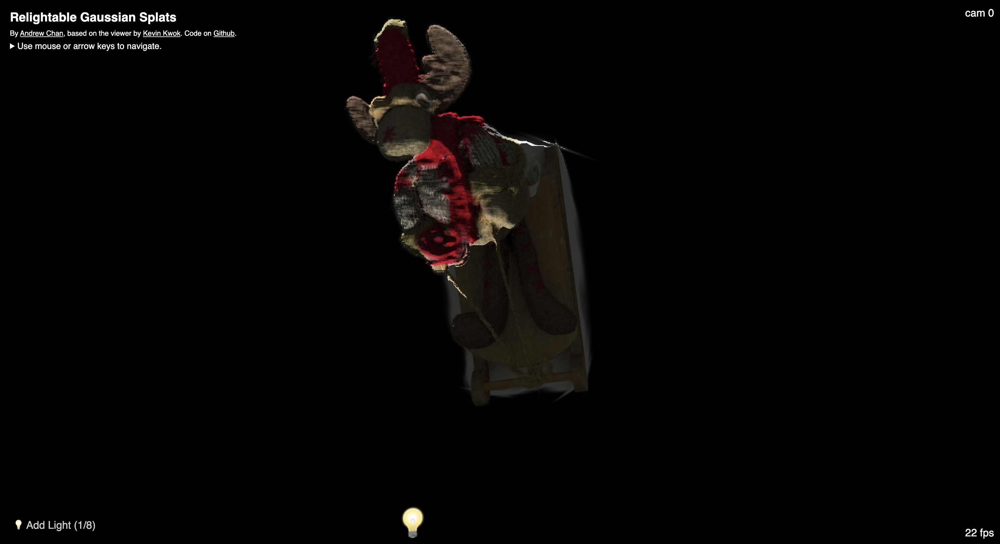
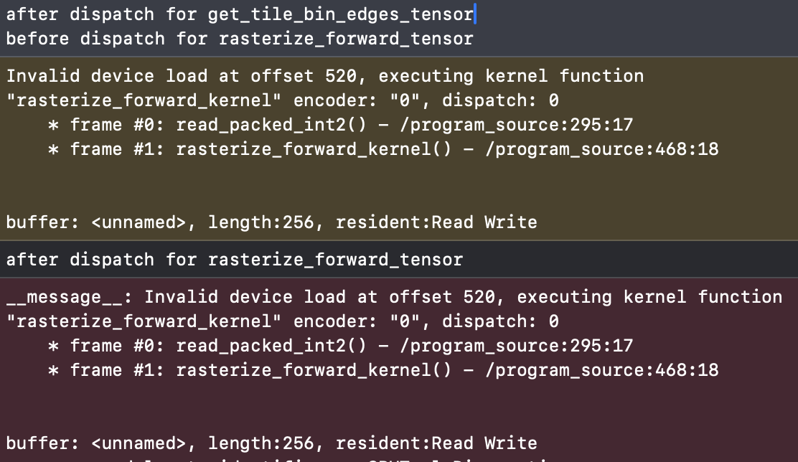
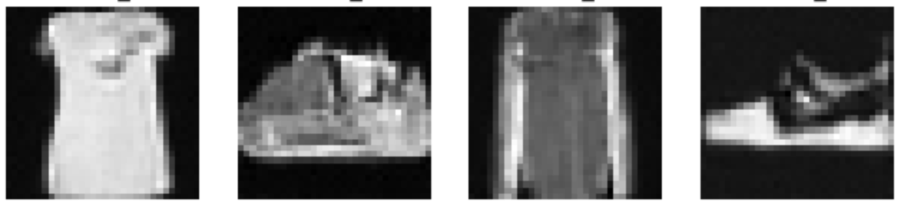

Things I did in April 2024
More gaussian splatting, Metal vs. CUDA, and earthquake worms.
I was able to build some stuff in April, which was fun, but like March, spent lots of time learning stuff in new domains!
Lighting with Gaussian Splats
The first thing I built was an implementation of something I saw on Twitter - a real-time lighting model for Gaussian splats. Looking back, it's pretty straightforward to get some lighting working if you know about traditional lighting techniques. For instance, all you need for shadow mapping is a way to view the depth of a scene from different viewpoints. And shading can also be done with a depth image as it's not too difficult to extract surface normals. So this post was partly just me learning traditional lighting techniques.
A splat scene with shadow mapping applied. Spooky!
That said, just bolting on these techniques isn't really enough as current splatting outputs are not designed to form coherent surface geometry. As I show in the post, we can somewhat fix this by filtering depth, but really we need to alter the reconstruction process so that proper geometry is encouraged.
One frustrating thing was that when exploring various papers as part of this project, I usually spent more time trying to get their code running than reading the actual paper or evaluating its results. For example, with the Relightable Gaussians paper, I spent more than an entire day trying to get the Python environment working with my machine.
Part of this is my own inexperience: for example, I didn't realize that while PyTorch normally comes with its own CUDA runtime which doesn't need to match the system CUDA, when installing C++ extensions for a specific PyTorch installation, it does need to match the system CUDA! I also didn't know that Anaconda provides a virtual environment for all types of dependencies, not just Python libraries. So you can have different CUDA versions in different Anaconda environments.
Adding Apple Silicon Support to Gaussian Splatting
Banana courtesy of OpenSplat.
I also added the first Apple GPU support to any open-source Gaussian splatting program
In any case I learned a lot about Metal, CUDA, and parallel programming in this project, which involved translating over the fused CUDA kernels used for Gaussian splatting to Metal. Some of my thoughts:
Thoughts on Metal (vs. CUDA)
The device API and shader language
Metal shader language has all the features that were used in the gaussian splatting CUDA kernels, and overall seems fairly well-featured. For example, the various units of execution in the CUDA GPU model are also there in Metal, just with different names:
- MPS grids = CUDA grids
- MPS thread groups = CUDA thread blocks
- MPS threads = CUDA threads
There are also atomics and warp-level primitives like shuffle instructions, so for the most part I was able to translate CUDA kernels to MPS kernels, parallel reductions and all, by just copy-pasting and looking up the right name for the primitives to use.
There are some annoying differences though. One thing that stumped me for a whole afternoon was that Metal expects a particular alignment of vectorized data types. Specifically Metal assumed
float3 arrays were using 16-byte float3 alignment when my program was dispatching the kernels with packed (12-byte) float3 alignment due to the data coming from packed PyTorch tensors.
I had to rewrite all the kernels to use "raw" float arrays instead with helper functions to extract float3 values.
Finally, while MSL and CUDA both look a lot like C++, CUDA is a lot closer to being a superset of C++.
- For example, you can include other C++ code in CUDA shaders. So for instance, you can use glm to make working with matrices easier (although MSL has nice native functionality for matrix-vector ops in particular, as it has graphics roots).
-
Also, in CUDA there is in-kernel
printfwhich goes to a host-side output stream. For someone coming from the comparatively ancient world of WebGL and OpenGL ES 3.0, this is an absurd luxury. Metal doesn't have anything similar.
The host API
Metal is lower-level and more verbose than CUDA. Whereas a kernel dispatch in CUDA is as easy as writing a funny-looking function call, in Metal, you need to manually encode which kernel you're dispatching, what arguments you're passing to it, and more. Apparently, this is common for graphics programming APIs: WebGPU works the same way as Metal.
In CUDA, defining and dispatching a kernel to add all elements of a float array allocated on the device might look like so:
// host code
void add_constant(float x, float* data, const int n) {
int blocks = (n + N_THREADS - 1) / N_THREADS;
add_constant_kernel<<<blocks, N_THREADS>>>(n, x, data);
}
// device code
__global__ void add_constant_kernel(const int n, const float x, float* data) {
unsigned idx = cg::this_grid().thread_rank();
if (idx >= n) return;
data[idx] += x;
}
In Metal it looks like this:
// host code
void add_constant(MetalContext* ctx, float x, float* data, const int n) {
id<MTLCommandBuffer> command_buffer = [ctx->command_queue commandBuffer];
id<MTLComputeCommandEncoder> encoder = [command_buffer computeCommandEncoder];
// add_constant_cpso is a MTLComputePipelineState object created beforehand
[encoder setComputePipelineState:ctx->add_constant_cpso];
[encoder setBytes:&n length:sizeof(n) atIndex:0];
[encoder setBytes:&x length:sizeof(x) atIndex:1];
[encoder setBuffer:data offset:0 atIndex:2];
[encoder dispatchThreadgroups:thread_groups threadsPerThreadgroup:threads_per_group];
[encoder endEncoding];
[command_buffer commit];
}
// device code
kernel void add_constant_kernel(
const int& n,
const float& x,
device float* data,
uint idx [[thread_position_in_grid]]
) {
if (idx >= n) return;
data[idx] += x;
}
I'm not really sure why there is such a big difference in the developer experience. For this particular example, it seems like both a common thing to do and fairly easy to implement a compile-time-checkable kernel dispatch syntax. Twitter has not been helpful in answering my questions. That said it's possible it's much harder than I think it is because you need to be able to handle your global context, command buffer, etc. somewhere, and thus have to think carefully about how that affects other parts of your API.
Other
Metal does have some things going for it. The shader debugging experience via XCode is pretty nice; you can turn on shader validation, which will add a bunch of checks at runtime for things like invalid loads/stores. This can help catch incorrect argument encoding among other things (although a compile-time check for these types of errors is certainly preferable).
Also, I personally prefer the C++-like syntax of Metal to the Rust-like syntax of WGSL. This also made translation from CUDA easier.
Claude was also extremely helpful in learning about CUDA vs Metal. It got some surprising things right, like identifying that a memory stomp bug I was running into was
due to alignment. However, it wasn't totally reliable, and kept thinking that I could use printf in my Metal shaders.
Overall, Metal feels like a much rougher developer experience than CUDA for me. I'm still very much a beginner to parallel programming (having only learned about things like parallel reductions in this project), so I don't feel I have a good understanding of how important the differences I highlighted are, or why they exist. However, at the very least, CUDA has been around since 2007, while Metal came out in 2014, so the former has clearly had much more time to mature.
The best references I found for both were:
Taking the fast.ai course
Some samples from a diffusion model trained on the Fashion-MNIST dataset as part of the fast.ai course.
I also started taking the fast.ai course in April to get more hands-on experience with the models and tools behind the last few years of the AI wave. Part 1 was pretty basic and covered topics that I wasn't interested in (many older and less general techniques like decision trees, which I had learned about in my undergrad ML courses, and too much of a focus on using the fastai library), so I skipped it and moved on to part 2, which "builds Stable Diffusion from scratch".
Some thoughts on fastai:
- The course is a solid practical resource. I feel like I now have a toolkit of libraries and recipes to approach specific deep learning tasks, which I didn't have before.
-
For example, I'm now confident I can train a deep CNN to do image classification and other well-defined, data-rich supervised learning tasks to near-SOTA
Or at least good enough for production applications. performance, which I would struggle with before (techniques like normalization and initialization were not emphasized when I took ML courses in undergrad). - I also now know some techniques for debugging models and various notebook tricks, like plotting activations with hooks and inspecting notebook variables.
- Finally, it's nice to be exposed to the world of techniques available to deep learning practitioners, even if they are not explained in depth.
However:
- A surprising amount of the course is spent on Jeremy's favorite way of coding things up (for example, spending nearly an entire lecture on refactoring a notebook into classes).
- The lessons do not cover theory to much depth and there aren't exercises, so I don't feel like I have a good grasp on theory besides some techniques like initialization, which makes it hard to know when to use one technique over another. I don't feel that the course has made me able to understand and extend the latest research nor debug arbitrary problems with large foundation models on arbitrary tasks.
-
I'm left with some questions after each lesson, like:
- When should I use initialization vs. normalization?
- Does LSUV work for all architectures? Can I just use that instead of specific initialization schemes? Does LayerNorm completely supersede it?
- When should I use batch normalization vs. layer normalization?
- When should I use learning rate annealing vs. cyclical learning rate, and what's the idea behind cyclical LR? I'm not satisfied with the claim that "momentum should be low when LR is high."
- How do I decide what optimizer to use?
- I was probably most unsatisfied with how diffusion was explained in the course. I explored this later in May.
I think that I'm not used to a lecture-only, theory-light course which doesn't test me on the material afterwards. Probably students more comfortable with self-assessment, coming up with their own questions and answers, will have an easier time learning from this course.
Other
Still sorta tech-related: I joined South Park Commons this month. It's great having a community of interesting people to explore with and keep me accountable!
My favorite non-technical readings this month were:
- i feel dizzy (again) by joodaloop: A personal essay about grappling with the dizzying pace of AI progress. I resonated with the parts about feeling rushed and being sad about "the craft" going away, and found the anecdote about persisting with bad guitar and art hopeful.
- Learning how to learn by Neel Nanda: Great blog post about all the techniques Neel found useful for learning quickly and retaining knowledge. This is like the 42nd time I've come across someone I respect recommending spaced repetition for stuff other than language learning or studying for tests so it's about time I started applying it. Also great affirmation of the value in teaching something you learn to someone else, and some useful suggestions on general questions to ask domain experts.
Here's a good quote from the joodaloop essay:
But what if you like doing things? What if your ethic is Protestant, your dedication is to the craft, and you just can't live without the need to be useful?
What if you're like the programmers who are not mad about the possibility of losing their jobs, as much as they are sad that they can't spend the rest of their career typing ASCII characters onto a screen while thinking hard? They don't care about “prompting” an opaque model into creating business value, that's not why they got into this.
You want problems. You want to feel smart about solving them, this is your jam. Some of you are actually sad that you cannot “grind” anymore, that things will be made too easy. (The grind is dead, long live the grind). I think this is as real a sadness as any other.
I also started a thing with friends where we watch Asian movies. We watched Suzume and argued about how the movie could've been better for two hours. My take: the movie has good bones, but the theme of moving on from past trauma is undermined by the weird romance and the other theme of saving Japan from the earthquake worms.